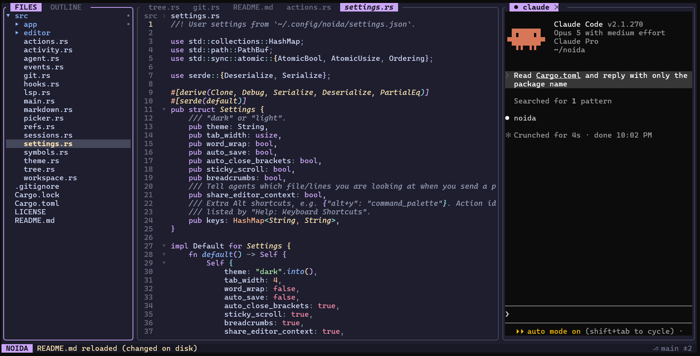

NOIDA puts a file tree, a real editor, LSP and git review next to your actual Claude Code or Codex session, in your terminal. Every file:line the agent prints opens with one click.
~20 MBof memory, one native binary.
No Electron.
Your agent writes and explains. You read, check and steer. NOIDA removes the alt-tabbing between the two.
Your real claude or codex runs in a pane, with your login, MCP servers and slash commands.
Paths, #L10-20 ranges and symbol names in the answer are links. Alt+j labels them for the keyboard.
The tree expands, the editor jumps to the line, and definitions and references are one key away.
Select lines and press Alt+s. @file#L87-90 lands in the agent's prompt.
If your day is mostly "agent writes, you review", this covers what you were opening VS Code for, plus the parts it was never built to do.

Download a binary for Linux or macOS from the latest release, or build from source with Rust 1.88 or newer. NOIDA adds a tab for each agent CLI it finds on your PATH.
Also available: static and glibc Linux binaries, macOS tarballs for Apple Silicon and Intel, and cargo install --git https://github.com/its-banana-coder/noida to build from source. Every download has a checksum, and all of them are built in the open on GitHub Actions. On Windows, run NOIDA inside WSL and install the .deb.
On a Mac, set your terminal's Option key to act as Alt, or press Ctrl+] before any shortcut. The README has the setting for each terminal.
NOIDA is an early preview, moving fast. Here's what has shipped and what comes next.
Used daily on Linux and WSL2 with Claude Code, Codex and rust-analyzer. CI builds and tests every commit on macOS too, but hands-on Mac use is still limited.
NOIDA runs the real CLI and adds its hooks per session. Your Claude and Codex config files are never modified.
MIT licensed, and built and released on GitHub's free infrastructure for public projects. No account and no paid tier.
Rejecting a hunk reverts it on disk. Destructive actions ask twice, but git is your undo.